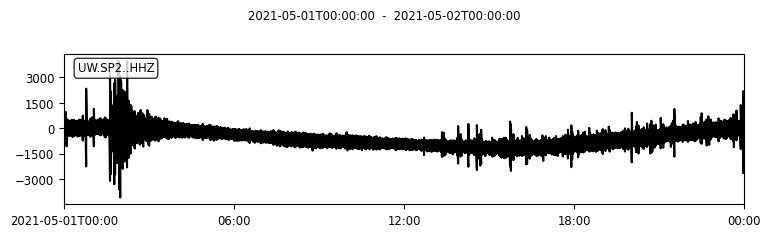
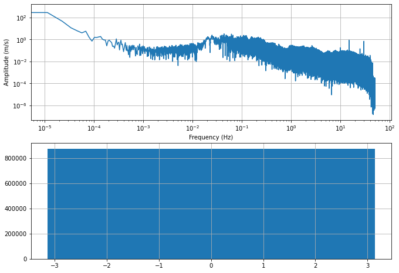
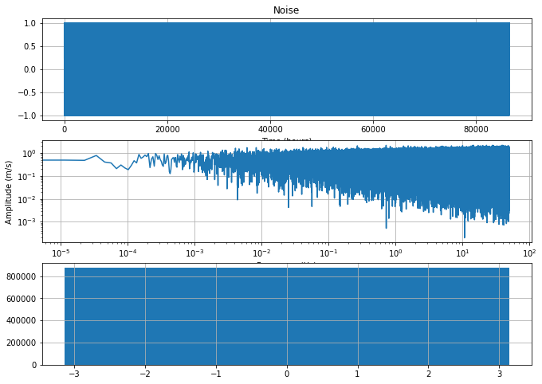

Frequency Transform
Contents
Frequency Transform#
In this tutorial we will practice Fourier transform of Numpy arrays using the Scipy FFTpack module. We will practice on the UW seismic station that is located in SoDo next to the freight train station.
import numpy as np
import matplotlib.pyplot as plt
%matplotlib inline
1. Data prep#
we download the data and perform a minimal pre-processing (detrend, demean)
# Import the Obspy modules that will be useful to download seismic data
import obspy
import obspy.clients.fdsn.client as fdsn
from obspy import UTCDateTime
# Solution
network = 'UW'
station = 'SP2'
channel = 'HHZ'# this channel gives a low frequency, 1Hz signal.
Tstart = UTCDateTime(year=2021, month=5, day=1)
Tend = UTCDateTime(year=2021, month=5, day=2)
fdsn_client = fdsn.Client('IRIS')
Z = fdsn_client.get_waveforms(network=network, station=station, location='--', channel=channel, starttime=Tstart, \
endtime=Tend, attach_response=True)
Z.detrend()
Z.merge()
Z.plot()
T = np.linspace(0,(Tend-Tstart),Z[0].stats.npts)

2. Fourier transform#
We will use the real Fourier transform because all of the time series we will work with are real values. You can find information here: https://docs.scipy.org/doc/scipy/reference/generated/scipy.fftpack.rfft.html#scipy.fftpack.rfft
from scipy.fftpack import fft, ifft, fftfreq, next_fast_len
npts = Z[0].stats.npts
## FFT the signals
# fill up until 2^N value to speed up the FFT
Nfft = next_fast_len(int(Z[0].data.shape[0])) # this will be an even number
freqVec = fftfreq(Nfft, d=Z[0].stats.delta)[:Nfft//2]
Zhat = fft(Z[0].data,n=Nfft)#/np.sqrt(Z[0].stats.npts)
Plot the amplitude and phase spectra
fig,ax=plt.subplots(2,1,figsize=(11,8))
ax[0].plot(freqVec,np.abs(Zhat[:Nfft//2])/Nfft)
ax[0].grid(True)
ax[0].set_xscale('log');ax[0].set_yscale('log')
ax[0].set_xlabel('Frequency (Hz)');ax[0].set_ylabel('Amplitude (m/s)')
ax[1].hist(np.angle(Zhat))
ax[1].grid(True)

You will note above that the phase values are randomly distributed between -pi and pi.
create synthetic noise#
from numpy import random
# random values in time domain
noise=2*random.rand(npts)-1
## FFT the signals
# fill up until 2^N value to speed up the FFT
Zhat = fft(noise,n=Nfft)#/ fg g gnp.sqrt(Z[0].stats.npts)
fig,ax=plt.subplots(3,1,figsize=(11,8))
ax[0].plot(T,noise)
# ax[0].set_xlim(0,24)
ax[0].grid(True)
ax[0].set_xlabel('Time (hours)')
ax[0].set_title('Noise')
ax[1].plot(freqVec,np.abs(Zhat[:Nfft//2])/np.sqrt(Nfft))
ax[1].grid(True)
ax[1].set_xscale('log');ax[1].set_yscale('log')
ax[1].set_xlabel('Frequency (Hz)');ax[1].set_ylabel('Amplitude (m/s)')
ax[2].hist(np.angle(Zhat))
ax[2].grid(True)
# random values in spectral domain, with a white spectrum

#Now create a noise window with a WHITE spectrum (flat) and a random phase
noisep = np.zeros(Nfft,dtype=complex)
noise = np.zeros(Nfft)
for i in range(1,Nfft//2):
c=2*random.rand(1)-1
noisep[i]= np.exp(1j*np.pi*c[0])
noisep[Nfft//2:] = np.conj(noisep[:Nfft//2-1:-1])
noise = ifft(noisep)[:npts]*np.sqrt(Nfft)
# trim back to the length of the original time series
# noise = noise*np.sqrt(Nfft)
Zhat = fft(noise,n=Nfft)#/np.sqrt(Z[0].stats.npts)
fig,ax=plt.subplots(3,1,figsize=(11,8))
ax[0].plot(T,noise)
# ax[0].set_xlim(0,24);
ax[0].grid(True)
ax[0].set_xlabel('Time (hours)')
ax[0].set_title('Noise')
ax[1].plot(freqVec,np.abs(Zhat[:Nfft//2]))
ax[1].grid(True)
ax[1].set_xscale('log');ax[1].set_yscale('log')
ax[1].set_xlabel('Frequency (Hz)');ax[1].set_ylabel('Amplitude (m/s)')
ax[2].hist(np.angle(Zhat[:Nfft//2]))
ax[2].grid(True)
/Users/marinedenolle/opt/anaconda3/envs/uwdsgeo/lib/python3.9/site-packages/numpy/core/_asarray.py:102: ComplexWarning: Casting complex values to real discards the imaginary part
return array(a, dtype, copy=False, order=order)
# Now use the spectrum from the real data, and impose a random phase
Zhat = fft(Z[0].data,n=Nfft)#/np.sqrt(Z[0].stats.npts)
noisep = np.zeros(Nfft,dtype=complex)
noise = np.zeros(Nfft)
for i in range(1,Nfft//2):
c=2*random.rand(1)-1
noisep[i]=np.abs(Zhat[i])* np.exp(1j*np.pi*c[0])
noisep[Nfft//2:] = np.conj(noisep[:Nfft//2-1:-1])
noise = ifft(noisep)[:npts]#*np.sqrt(Nfft)
# trim back to the length of the original time series
Zhat = fft(noise,n=Nfft)#/np.sqrt(Z[0].stats.npts)
fig,ax=plt.subplots(3,1,figsize=(11,8))
ax[0].plot(T,Z[0].data)
# ax[0].set_xlim(0,24)
ax[0].grid(True)
ax[0].set_xlabel('Time (hours)')
ax[0].set_title('Data')
ax[1].plot(T,noise)
ax[1].set_xlabel('Time (hours)')
ax[1].set_title('Noise')
ax[2].plot(freqVec,np.abs(Zhat[:Nfft//2]))
ax[2].grid(True)
ax[2].set_xscale('log');ax[2].set_yscale('log')
ax[2].set_xlabel('Frequency (Hz)');ax[2].set_ylabel('Amplitude (m/s)')
/Users/marinedenolle/opt/anaconda3/envs/uwdsgeo/lib/python3.9/site-packages/numpy/core/_asarray.py:102: ComplexWarning: Casting complex values to real discards the imaginary part
return array(a, dtype, copy=False, order=order)
Text(0, 0.5, 'Amplitude (m/s)')
Spectrograms#
from scipy.signal import stft
nperseg=1000
f, t, Zxx = stft(Z[0].data, fs=100, nperseg=nperseg,noverlap=20)
print(np.max(np.max(np.abs(Zxx))))
fig,ax=plt.subplots(2,1,figsize=(11,8))
ax[0].pcolormesh(t/86400, f, np.abs(Zxx), vmin=0.1, vmax=1E2, shading='gouraud',cmap='turbo')
ax[0].set_title('STFT Magnitude')
ax[0].set_ylabel('Frequency [Hz]')
ax[0].set_xlabel('Time [Days]');ax[0].set_yscale('log');ax[0].set_ylim(0.01,0.5)
f, t, Zxx = stft(noise, fs=100, nperseg=nperseg,noverlap=20)
print(np.max(np.max(np.abs(Zxx))))
ax[1].pcolormesh(t/86400, f, np.abs(Zxx), vmin=0.1, vmax=1E2, shading='gouraud',cmap='turbo')
ax[1].set_title('Noise Magnitude')
ax[1].set_ylabel('Frequency [Hz]')
ax[1].set_xlabel('Time [Days]');ax[1].set_yscale('log');ax[1].set_ylim(0.01,0.5)
2906.69580085
/Users/marinedenolle/opt/anaconda3/envs/uwdsgeo/lib/python3.9/site-packages/scipy/signal/spectral.py:1812: UserWarning: Input data is complex, switching to return_onesided=False
warnings.warn('Input data is complex, switching to '
561.938950322
(0.01, 0.5)